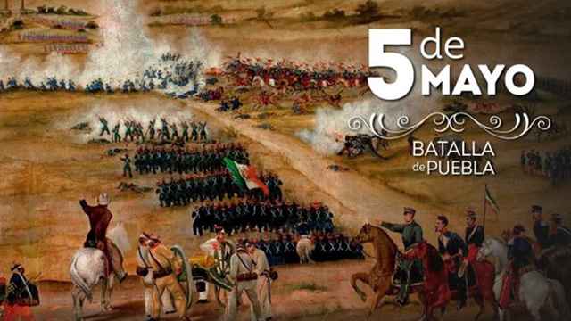

Batalla de Puebla
5 de mayo


Imagen de la batalla



-
BATALLA DEL 4 DE MAYO
Se muestran aspectos de la batalla
-
BATALLA DEL 5 DE MAYO
Se muestran aspectos de la batalla
-
INICIO DEL CONFLICTO DE LA BATALLA DEL 5 DE MAYO
¿Por que se inicio esta batalla?
-
MUSEOS SOBRE EL TEMA DEL 5 DE MAYO
¿Que museos existen de esta batalla?
-
HEROES DE LA BATALLA
Personajes mas importantes de esta batalla


 3
3 4
4 5
5 7
7 8
8